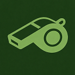

Your download is starting
Two parts to finish setup: open the file in your browser, then install it on your Mac.
Your download will begin in 3 seconds. Download manually
-
1
Open WorkCoach.dmg from your browser’s downloads. Can’t find it? Open the Downloads folder in Finder and double-click WorkCoach.dmg.
-
2
Drag the Work Coach icon onto the Applications folder. Do this in the window that pops up after you open the file.
-
3
Open your Applications folder and double-click Work Coach. If your Mac asks “Are you sure you want to open it?”, click Open.
-
4
Click Record when your next meeting starts. If your Mac asks for microphone or screen recording access, click Allow. Work Coach needs it to observe your meetings.
Here’s what that looks like
Open WorkCoach.dmg from your browser’s downloads

Work CoachDrag Work Coach onto the Applications folder
-
Google Drive.app
-
Claude.app
-
Work Coach.app
-
Zoom.app
Open Applications and double-click Work Coach
When a meeting starts, Work Coach asks to record
Your download is starting
Two parts to finish setup: open the file in your browser, then install it on your PC.
Your download will begin in 3 seconds. Download manually
-
1
Open WorkCoach-win-Setup.exe from your browser’s downloads. Press Ctrl+J to see your downloads, or open the Downloads folder in File Explorer and double-click the file.
-
2
Let Windows run the installer. If a blue “Windows protected your PC” box appears, click More info, then Run anyway.
-
3
Wait for the installer to finish, then open Work Coach. It takes under a minute. If Work Coach doesn’t open on its own, find it in the Start menu.
-
4
Click Record when your next meeting starts. If Windows asks for microphone access, click Yes. Work Coach needs it to observe your meetings.
Here’s what that looks like
Open WorkCoach-win-Setup.exe from your browser’s downloads
Wait for the installer to finish setting up Work Coach
Launch Work Coach from your Start menu or taskbar
When a meeting starts, Work Coach asks to record
Work Coach is a desktop app
It runs on your Mac or Windows computer during meetings. Drop your email and we'll send you a download link for when you're back at your computer.